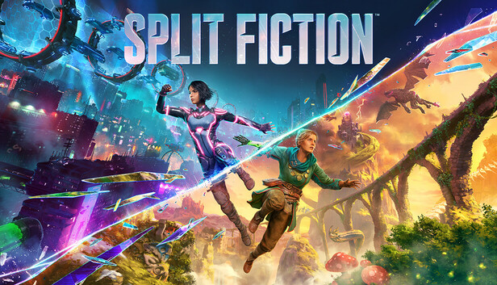

Split Fiction
Género: Acción/Aventura
Plataforma: PC, Consola
Vive momentos alucinantes al adentrarte en los múltiples mundos de Split Fiction, una aventura cooperativa que va más allá de los límites, del estudio creador del Juego del Año de 2021, It Takes Two. Mio y Zoe son dos escritoras de géneros muy distintos (una escribe ciencia ficción y la otra fantasía), que quedan atrapadas en sus propias historias tras ser conectadas a una máquina diseñada para robarles sus ideas creativas. Tendrán que apoyarse mutuamente para conseguir salir con sus recuerdos intactos, trabajar juntas para dominar distintas habilidades y superar retos mientras saltan entre mundos de ciencia ficción y fantasía en esta inesperada historia de amistad.